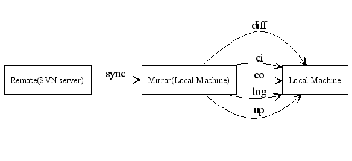

Category: Modules Keywords: Graph::Easy
最初认识这模块是 joe jiang 用的时候。他用这个模块做了一些很有用的图。后来在 use.perl 上也看到几个人用这个做 DBIx::Class 的关系图。觉得挺不错的。
今天拿来做做 svk 的关系图。发现做一个简单的图很简单。复杂的图应该也比较简单，不过还没试验过。
因为在 Win32 下跑，所以也没安装 'gpg'. 因为很简单，所以代码也很简单：
#!/usr/bin/perl用 Graphviz 弄出来的结果大致是这样子的：
use strict;
use warnings;
use CGI::Carp qw(fatalsToBrowser);
use CGI qw/:cgi/;my $query = new CGI;
print $query->header(-type=>'text/html');use Graph::Easy;my $graph = Graph::Easy->new();my $remote = $graph->add_node("Remote\n(SVN server)");
my $mirror = $graph->add_node("Mirror\n(Local Machine)");
my $local = $graph->add_node('Local Machine');# sync
my $edge = Graph::Easy::Edge->new( label => 'sync' );
$graph->add_edge ($remote, $mirror, $edge);
# checkout, up, ci
$edge = Graph::Easy::Edge->new( label => 'co' );
$graph->add_edge ($mirror, $local, $edge);
$edge = Graph::Easy::Edge->new( label => 'up' );
$graph->add_edge ($mirror, $local, $edge);
$edge = Graph::Easy::Edge->new( label => 'ci' );
$graph->add_edge ($mirror, $local, $edge);
# log, diff
$edge = Graph::Easy::Edge->new( label => 'log' );
$graph->add_edge ($mirror, $local, $edge);
$edge = Graph::Easy::Edge->new( label => 'diff' );
$graph->add_edge ($mirror, $local, $edge);# raw HTML section
#print $graph->as_html_file( );
#my $graphviz = $graph->as_graphviz();
